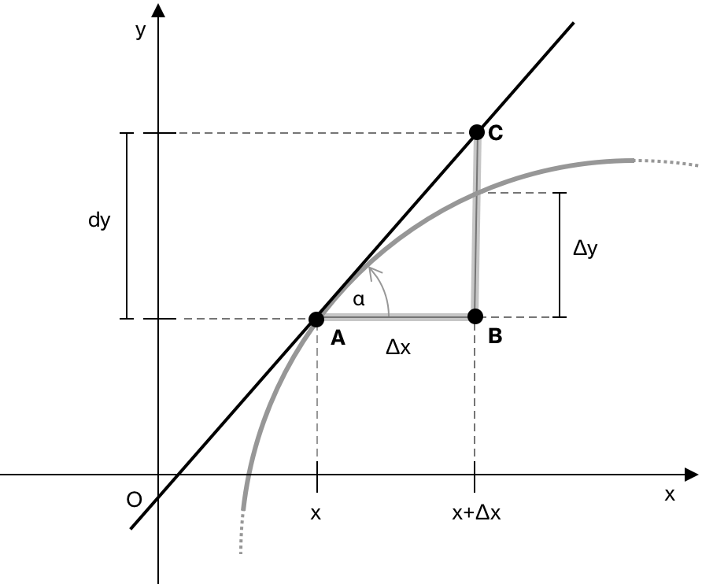

Диференціал функції
Розглянемо \(f(x)\) як диференційовну функцію на проміжку \([a,b]\). Оскільки функція є диференційовною, вона також є неперервною на заданому проміжку. Нехай ми розглянемо дві точки \(x\) та \(x + \Delta x \in [a,b]\).
Диференціал функції \(f(x)\) відносно точки \(x\) та приросту \(\Delta x\) визначається як добуток похідної функції в точці \(x\) та приросту \(\Delta x\):
\[ \mathrm{d}y = f’(x) \cdot \Delta x \tag{1} \]
Диференціал незалежної змінної \(x\) дорівнює приросту самої змінної: \(\mathrm{d}x = \Delta x.\) Підставивши це значення в означення, ми отримаємо:
\[ \mathrm{d}y = f’(x) \cdot \mathrm{d}x \tag{2} \]
З формули випливає, що перша похідна функції є відношенням диференціала функції до диференціала незалежної змінної:
\[ f’(x) = \frac{\mathrm{d}y}{\mathrm{d}x} \tag{3} \]

З геометричної точки зору розглянемо трикутник ABC. За властивостями тригонометрії та прямокутних трикутників, сторону \(\overline{BC}\) можна записати як:
\[\overline{BC} = \overline{AB} \cdot \tan(\alpha) \tag{4}\]
де \(\overline{AB} = \Delta x\) та \(\tan(\alpha) = f’(x)\). Рівність \((4)\) можна, таким чином, переписати як:
\[ \begin{align} \overline{BC} &= \overline{AB} \cdot \tan(\alpha) \tag{5} \\[0.5em] &= \Delta x \cdot f’(x) \\[0.5em] &= \mathrm{d}y \end{align} \]
Іншими словами, диференціал \( dy \) — це зміна ординати дотичної до кривої при переході від точки A з абсцисою \( x \) до точки B з абсцисою \( x + \Delta x \).